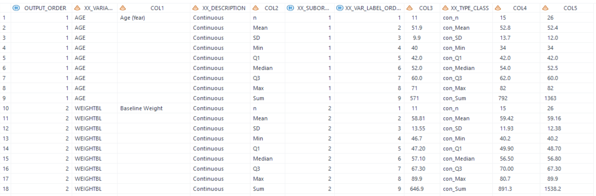
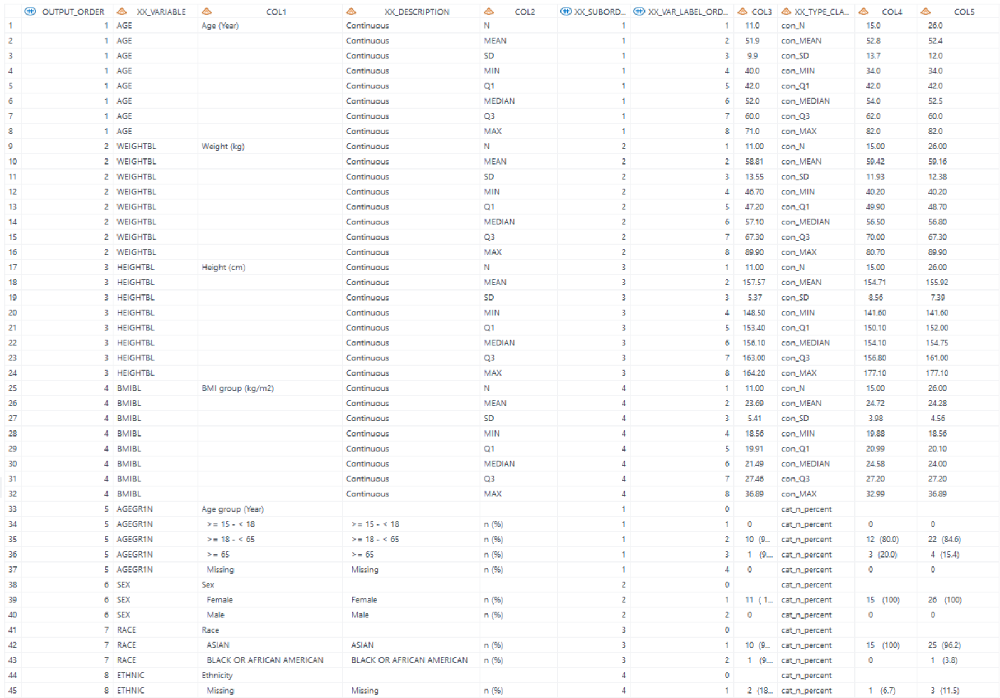

Example
Example 1 Summarize categorical variables
Example 2 Use pre-define formats to summary categorical Variables
Example 3 Summarize continuous variables
Example 4 Summarize categorical and continuous variables
Example 5 Use specified denominator for calculating percentage
Example 1 Summarize categorical variables
Details
This example does the following:
Compute "n" and "n (%)" statistics for categorical variables only based on adsl dataset itself as the denominator.
Program
%m_u_desc_stat_grp_mix(inds= adam.adsl
, datout= adsl_stat1
, varlist_cat= SEX RACE ETHNIC
, varlist_cont=
, exclude_stat=
, add_lead_row=Y
, output_order=
, byvar= TRT01AN
, denom_dt=
, grp_miss=0
, pop_mvar=saspopb
, deBug=N
);
Program Description
Input data feature
The input dataset adam.adsl includes variables SEX, RACE, and ETHNIC. SEX, RACE, ETHNIC are character variables, and ETHNIC contains some records with missing values.

Parameter description
Calculate treatment group through parameter
pop_mvar=saspop.
Global macrosaspopbwhich includes total group, is created in %m_u_popn which should be executed prior to invoking this macro.Set
varlist_cat= SEX RACE ETHNICto calculate the counts and counts_percentage of categorical variables.Set
add_lead_row=Yto output the leading row of categorical variables before the summary of "cat_n_percent".Set
varlist_cont=specifies no continuous variables will be calculated at the same time.exclude_stat=specifies that results will output "cat_n" and "cat_n_percent" for categorical variables, no statistic will be excluded.output_order=will use default order of variables, which will be same asvarlist_cat, namely order by SEX, RACE, and then ETHNIC. Setdenom_dt=means using default dataset as denominator,indsin this example will be used as denominator.
Output
Generate a dataset named adsl_stat1 that contains the "cat_n" (category count) and "cat_n_percent" (category percentage) statistics. If the dataset contains missing values, a separate row labeled "Missing" is created to represent these instances.
For the report, COL1 through COL5 will be utilized, with COL1 designated for variable labels for each row section, COL2 for the statistics column, and the treatment groups' data starting from COL3.

Example 2 Use pre-define formats to summary categorical Variables
Details
This example does the following:
- Calculate the "n (%)" statistic, excluding the "cat_n" statistic.
- Apply the pre-defined format to display values for SEX and AGEGR1N.
- Assign a new label to the AGEGR1N variable to overwrite the existing leading row description.
Program
proc format;
value $gender (notsorted)
"F"="Female"
"M"="Male"
;
value age1_cat (notsorted)
1=">= 15 - < 18"
2=">= 18 - < 65"
3=">= 65"
4="Missing"
;
quit;
data adsl;
label AGEGR1N = 'Age group (Year)';
set adam.adsl;
format SEX $gender. AGEGR1N age1_cat.;
run;
%m_u_desc_stat_grp_mix(inds= adsl
, datout= adsl_stat2
, varlist_cat= AGEGR1N SEX RACE ETHNIC
, exclude_stat= cat_n
, add_lead_row=Y
, byvar= TRT01AN
, grp_miss=0
, pop_mvar=saspopb
, deBug=N
);
Program Description
Input data feature
The input dataset adsl includes the variables AGEGR1N, SEX, RACE, and ETHNIC. AGEGR1N is a numeric variable, and SEX, RACE, ETHNIC are character variables. The original label for AGEGR1N is "Pooled Age Group 1 (N)".
Parameter description
Similar to Example 1, but labeled AGEGR1N as "Age group (Year)", and formated analysis variables AGEGR1N and SEX as the pre-define format before calling this macro. New labels and formated values will be displayed as row text in the output.
Note: The sequence during the formatting process can influence the outcome. In proc format, if
(notsorted)is specified, then formatted values are sorted based on their positional order, not by their original values nor by formatted values.
Only to calculate the "cat_n_percent" (category percentage) and excluded "cat_n" for variables varlist_cat= AGEGR1N SEX RACE ETHNIC when exclude_stat=cat_n option is specified.
Output
Generate a dataset named "work.adsl_stat1.sas7bdat" that contains the "cat_n_percent" statistic. It will utilize columns COL1 through COL5 for reporting purposes, where COL1 is reserved for labels of variables for each row section, and COL2 is designated as the statistics column. The data for treatment groups starts from COL3.
Note: In this example, if only one statistic "cat_n_percent" is presented, suggest to remove the statistics column. To do this, set
hide_lvls = Yto hide the column to only display the label column and the result columns. For the report, only COL1 through COL4 will be utilized, with COL1 storing labels for each variable section, and the treatment groups' data starting from COL2.
Example 3 Summarize continuous variables
Details
This example does the following:
- Compute "n", "Mean", "SD", "Min", "Q1", "Median", "Q3", "Max", and "Sum" statistics for continuous variables.
- Assign new labels for analysis variables aiming to overwritten the existing leading row description.
Program
data adsl;
label AGE = 'Age (Year)'
WEIGHT='Weight (kg)'
HEIGHT='Height (cm)'
BMIBL = 'BMI group (kg/m2)';
set adam.adsl;
run;
%m_u_desc_stat_grp_mix(inds= adsl
, datout= adsl_stat3
, varlist_cat=
, varlist_cont= AGE WEIGHTBL HEIGHTBL BMIBL
, exclude_stat= con_mis
, decimal_list=###2
, output_order=
, byvar= TRT01AN
, grp_miss=0
, pop_mvar=saspopb
, deBug=N
);
Program Description
Input data feature
The input dataset adsl includes the analysis variables AGE, WEIGHTBL, HEIGHTBL, and BMIBL. They are all continuous variables.

Parameter description
Similar to Example 2, but set
varlist_cont= AGE WEIGHTBL HEIGHTBL BMIBLto specify the continuous analysis variables. New labels for variables ofvarlist_contare assigned before calling this macro.Leave
varlist_catblank to specify no category variables will be calculated at the same time.output_order=specifies that default order of variables will be used, which will be same asvarlist_cont, namely order by AGE, WEIGHTBL, HEIGHTBL, and BMIBL.For BMIBL, there's no rounding in input dataset and we need to specify the number of decimal places.
decimal_list=###2means decimal places for BMIBL is set to '2', and other variables are determined by the values ininds.exclude_stat= con_misto exclude "con_mis" value, and display "n", "Mean", "SD", "Min", "Q1", "Median", "Q3", "Max", and "Sum" statistics in the output.
Output
Generate a dataset named "work.adsl_stat3.sas7bdat" that stores the "n", "Mean", "SD", "Min", "Q1", "Median", "Q3", "Max", "Sum" statistics. COL1-COL5 will be used for the report. COL1 stores labels of variables for each row section, COL2 is statistics column. The treatment groups start from COL3.


Example 4 Summarize categorical and continuous variables
Details
This example does the following:
- Calculate "n (%)" for categorical variables and statistics "n", "Mean", "SD", "Min", "Q1", "Median", "Q3" and "Max" for continuous variables.
- Apply the pre-defined format to display values for SEX and AGEGR1N.
- Assign new labels to analysis variables to replace the existing leading row descriptions.
- Determine the order of variables for the output.
- Apply
exclude_stat= cat_n con_sumto exclude specific statistics from the output.
Program
proc format;
value $gender (notsorted)
"F"="Female"
"M"="Male"
;
value age1_cat (notsorted)
1=">= 15 - < 18"
2=">= 18 - < 65"
3=">= 65"
4="Missing"
;
quit;
data adsl;
label AGEGR1N = 'Age group (Year)'
AGE = 'Age (Year)'
WEIGHT='Weight (kg)'
HEIGHT='Height (cm)'
BMIBL = 'BMI group (kg/m2)';
set adam.adsl;
format SEX $gender. AGEGR1N age1_cat.;
run;
%m_u_desc_stat_grp_mix(inds= adsl
, datout= adsl_stat4
, varlist_cat= AGEGR1N SEX RACE ETHNIC
, varlist_cont= AGE WEIGHTBL HEIGHTBL BMIBL
, exclude_stat= cat_n con_sum con_mis
, add_lead_row=Y
, output_order= AGEGR1N AGE SEX RACE ETHNIC WEIGHTBL HEIGHTBL BMIBL
, byvar= TRT01AN
, grp_miss=0
, pop_mvar=saspopb
, deBug=N
);
Program Description
Input data feature
The adsl dataset, which includes variables AGEGR1N, AGE, SEX, RACE, ETHNIC, WEIGHTBL, HEIGHTBL, and BMIBL, serves as the input dataset.
Parameter description
Calculate treatment group through parameter
pop_mvar=saspop.
Global macrosaspopbwhich includes total group, is created in %m_u_popn which should be executed prior to invoking this macro.To calculate statistics for each variables of
varlist_cat= AGEGR1N SEX RACE ETHNICandvarlist_cont= AGE WEIGHTBL HEIGHTBL BMIBL. New labels and formats are assigned to variables before calling this macros and will be displayed as row texts in the output.output_order= AGEGR1N AGE SEX RACE ETHNIC WEIGHTBL HEIGHTBL BMIBLspecifies that order of row sections is defined as AGEGR1N, AGE, SEX, RACE, ETHNIC, WEIGHTBL, HEIGHTBL, and then BMIBL.exclude_stat= cat_n con_sum con_misspecifies that "n" for categorical variables and "Sum","Missing" for continuous variables will be excluded and display "n (%)", "n", "Mean", "SD", "Min", "Q1", "Median", "Q3", and "Max" statistics in the output.
Output
Generate a dataset named "work.adsl_stat4.sas7bdat" that stores the "n (%)", "n", "Mean", "SD", "Min", "Q1", "Median", "Q3", and "Max" statistics. COL1-COL5 will be used for the report. COL1 stores labels of variables for each row section, COL2 is statistics column. Results of the treatment groups start from COL3.

Note: if
output_orderoption is null, default output order will be continuous variables first, and then categorical variables. Assume that output_order is not provided in this example, the order will be AGE, WEIGHTBL, HEIGHTBL, BMIBL, AGEGR1N, SEX, RACE, and then ETHNIC. 
Example 5 Use specified denominator for calculating percentage
Details
This example does the following:
Use the denom_dt option to specify the denominator dataset for computing "n (%)" statistic.
Program
data denominator_random;
set adam.adsl;
if RANDFL = "Y";
keep USUBJID TRT01PN RANDFL;
run;
%m_u_desc_stat_grp_mix(inds= adsl
, datout= adsl_stat5
, varlist_cat= SAFFL
, exclude_stat= cat_n
, add_lead_row=N
, byvar= TRT01PN
, denom_dt= denominator_random
, pop_mvar=saspopb
, deBug=N);
Program Description
Input data feature
Input dataset adsl only keep the SAFFL='Y' records.

Create denominator datast
Define randomization dataset as the denominator dataset. USUBJID andbyvar(e.g. TRT01PN) must be included in dataset.

Parameter description
Calculate treatment group through parameter
pop_mvar=saspop
Global macrosaspopbwhich includes total group, is created in %m_u_popn which should be executed prior to invoking this macro.Sepcified
denom_dt=denominator_randomin this macro. Call this macro, only to calculate "cat_n_percent" for categorical variablevarlist_cat= SAFFLwhenexclude_stat=cat_noption is specified.
Output
Generate a dataset named "work.adsl_stat5.sas7bdat" that stores the "cat_n_percent" statistic. Percentage is not based on safety population, but based on randomzation population, which has more subjects.